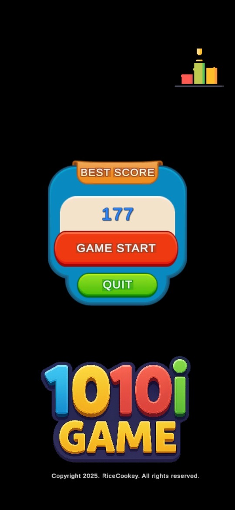
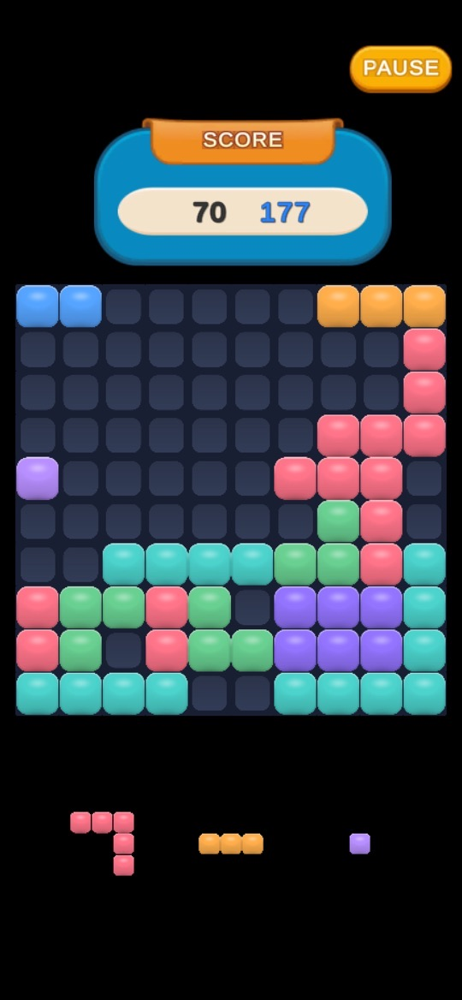
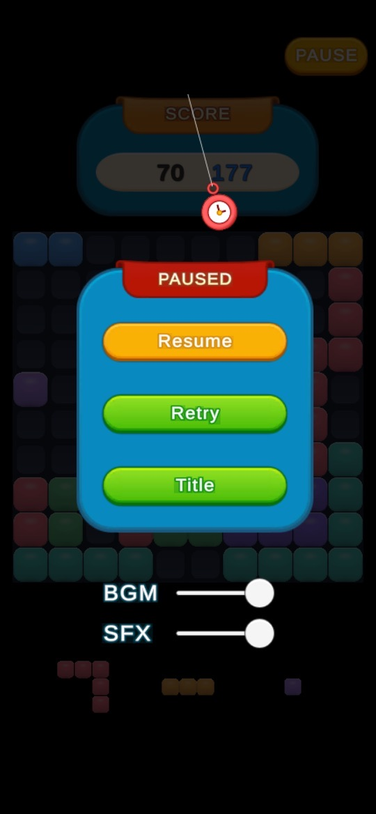

알록달록한 블록을 10×10 보드의 빈 칸에 맞춰 놓고, 가로나 세로 한 줄을 가득 채워 지우며 최고 점수에 도전하는 퍼즐입니다.
게임의 기본 흐름
- 보드 아래에 놓을 블록들이 나옵니다(스크린샷에는 세 개가 대기 중입니다).
- 블록을 보드의 빈 칸에 배치합니다.
- 가로 혹은 세로 한 줄이 가득 차면 그 줄의 블록이 사라지고 점수가 올라갑니다. 3.1.0부터는 줄이 훨씬 빠르게 사라지고, 파괴 이펙트와 점수 팝업이 나오며, 한 번에 지운 줄 수에 따라 화면 흔들림이 달라집니다.
- 스토어 설명은 게임 오버가 되지 않도록 빈 칸을 전략적으로 관리하며 최고 점수를 갱신하라고 안내합니다.
조작과 메뉴
- 블록 놓기: 손가락 하나로 블록을 골라 빈 칸에 배치합니다.
- 타이틀 화면: BEST SCORE(최고 점수), GAME START, QUIT 버튼과 오른쪽 위 랭킹 아이콘이 있습니다.
- PAUSE: 게임 중 오른쪽 위 버튼을 누르면 Resume(계속), Retry(다시 시작), Title(타이틀로) 메뉴와 BGM·SFX 음량 슬라이더가 나옵니다.
- 진동: 줄을 완성하면 진동이 울리며, 설정에서 켜고 끌 수 있습니다.
- 닉네임: 랭킹 화면의 EDIT 버튼으로 언제든 바꿀 수 있습니다.
처음 시작하기
- 아래 스토어 링크에서 설치합니다. 3.1.0부터 게임 안 표기는 영어로 통일되었습니다.
- 타이틀 화면에서 GAME START를 누릅니다.
- 아래에 나온 블록을 보드 가장자리부터 채워 보며 줄이 지워지는 것을 확인합니다.
- 잠시 멈추거나 소리를 줄이려면 PAUSE를 누릅니다.
- 기록을 다른 사람과 비교하고 싶다면 타이틀 화면의 랭킹 아이콘에서 닉네임을 정합니다.
초보자를 위한 참고 팁
아래는 일반적인 블록 배치 퍼즐 요령과 스토어 설명을 바탕으로 한 제안입니다. 나오는 블록 모양은 판마다 다릅니다.
- 가장자리부터 채우세요. 보드 가운데를 비워 두면 큰 블록을 놓을 자리가 오래 남습니다.
- 놓기 전에 대기 블록을 모두 보세요. 지금 놓을 블록이 다음 블록의 자리를 막지 않는지 먼저 확인하세요.
- 한 칸짜리 구멍을 만들지 마세요. 한 칸 블록이 나오지 않으면 그 구멍은 오래 남아 줄 완성을 막습니다.
- 여러 줄을 한 번에 노려 보세요. 한 번에 지운 줄 수에 따라 연출이 달라지므로, 두 줄을 동시에 채울 수 있게 블록을 모아 두는 것도 방법입니다.
- 조용한 곳에서는 소리를 줄이세요. PAUSE 메뉴의 BGM·SFX 슬라이더와 설정의 진동 끄기를 쓰세요.
스크린샷
App Store 한국 스토어에 게시된 공식 스크린샷입니다(버전 3.1.0 페이지 기준). 게임 화면 그대로이며 홍보 문구는 없습니다.



자주 묻는 질문
- 광고가 나오나요?
- Google Play에 광고 포함으로 표시되어 있습니다. 3.1.0 업데이트 내용에 따르면 보상 전에 광고를 닫아도 이어하기 기회가 사라지지 않고, 광고가 열리지 않을 때 버튼이 멈추던 문제도 고쳤습니다.
- 게임 안 글자가 왜 영어인가요?
- 3.1.0부터 글로벌 출시에 맞춰 게임 안 표기를 영어로 통일했습니다.
- 닉네임을 바꾸고 싶어요.
- 랭킹 화면의 EDIT 버튼으로 언제든 바꿀 수 있습니다.
- 스토어마다 같은 버전인가요?
- App Store는 3.1.0(2026년 7월 30일), Google Play는 같은 날 업데이트를 확인했습니다. 원스토어의 버전과 내용은 확인하지 못했습니다.
- 버그는 어떻게 알리나요?
- 화면 녹화나 캡처를 ricecookey.help@gmail.com으로 보내 주세요. 기기 모델과 앱 버전을 함께 적어 주시면 확인이 빠릅니다.
스토어 링크
게임 스토어
App Store와 Google Play는 무료(App Store 기준 iOS 15.0 이상, 4+), Google Play 표시: 광고 포함. 원스토어 페이지에는 100원으로 표시되어 있었으며 판매 조건은 바뀔 수 있습니다.
문의
질문, 요청, 버그 제보: ricecookey.help@gmail.com
참고 자료와 확인 범위
- App Store 페이지 — 버전 3.1.0(2026년 7월 30일 배포), 설명·업데이트 내용·스크린샷
- Google Play 페이지 — 2026년 7월 30일 업데이트, 설명과 광고 표시
- 원스토어 페이지 — 제목과 가격 표시만 확인
규칙과 메뉴 이름은 2026년 10월 20일에 확인한 스토어 설명, 업데이트 내용, 공식 스크린샷을 따랐습니다. 업데이트로 달라질 수 있으며, 게임 안의 표시가 이 페이지보다 우선합니다.
English
1010i is a block puzzle: fit colorful blocks into the empty cells of a 10×10 board, fill a full row or column to clear it, and chase your best score.
How it works
- Blocks to place appear under the board (three are waiting in the screenshot).
- Place a block into empty cells on the board.
- When a row or column is full, its blocks disappear and your score goes up. Since 3.1.0 lines clear much faster, with break effects and score pop-ups, and the screen shake depends on how many lines you clear at once.
- The store description tells you to manage empty cells strategically so the game doesn't end, and to beat your best score.
Controls and menus
- Placing blocks: one finger is all you need to pick a block and place it in empty cells.
- Title screen: BEST SCORE, GAME START and QUIT, plus a ranking icon at the top right.
- PAUSE: the top-right button during play opens Resume, Retry and Title, with BGM and SFX volume sliders.
- Vibration: completing a line vibrates the phone; turn it on or off in settings.
- Nickname: change it at any time with the EDIT button on the ranking screen.
Getting started
- Install from the store links below. Since 3.1.0 the in-game text is all in English.
- Tap GAME START on the title screen.
- Place the waiting blocks starting from the edges of the board and watch lines clear.
- Tap PAUSE to stop for a moment or turn the sound down.
- To compare scores with others, set a nickname from the ranking icon on the title screen.
Beginner tips
These suggestions come from general block-placement puzzle strategy and the store description. Block shapes differ from game to game.
- Fill from the edges. Keeping the middle open leaves room for large blocks for longer.
- Look at every waiting block before placing. Check that the block you place now won't block the next one.
- Avoid single-cell holes. Unless a one-cell block comes, that hole stays and stops lines from completing.
- Aim for several lines at once. Effects change with the number of lines cleared together, so it can pay to set up two lines that fill at the same time.
- Turn sound down in quiet places. Use the BGM and SFX sliders in the PAUSE menu and turn vibration off in settings.
Screenshots
Official screenshots from the Korean App Store (version 3.1.0 page). They show the game screens as they are, without marketing captions.
FAQ
- Are there ads?
- Google Play labels it Contains ads. According to the 3.1.0 notes, closing an ad before the reward no longer loses your continue chance, and buttons no longer freeze when an ad fails to open.
- Why is the in-game text in English?
- Since 3.1.0 the in-game text was unified in English for the global release.
- How do I change my nickname?
- Use the EDIT button on the ranking screen at any time.
- Is every store on the same version?
- We checked App Store 3.1.0 (July 30, 2026) and a Google Play update on the same day. The ONE Store version and contents were not checked.
- How do I report a bug?
- Send a screen recording or screenshot to ricecookey.help@gmail.com. Including your device model and app version speeds things up.
Store links
Game stores
Free on the App Store and Google Play (App Store: iOS 15.0 or later, rated 4+); Google Play shows Contains ads. The ONE Store page showed a price of KRW 100, and terms may change.
Contact
Questions, requests and bug reports: ricecookey.help@gmail.com
References and scope
- App Store listing — version 3.1.0 (released July 30, 2026), description, release notes and screenshots
- Google Play listing — updated July 30, 2026; description and ads label
- ONE Store listing — title and price only
Rules and menu names follow the store descriptions, release notes and official screenshots checked on October 20, 2026. Updates may change them, and what the game shows takes precedence over this page.